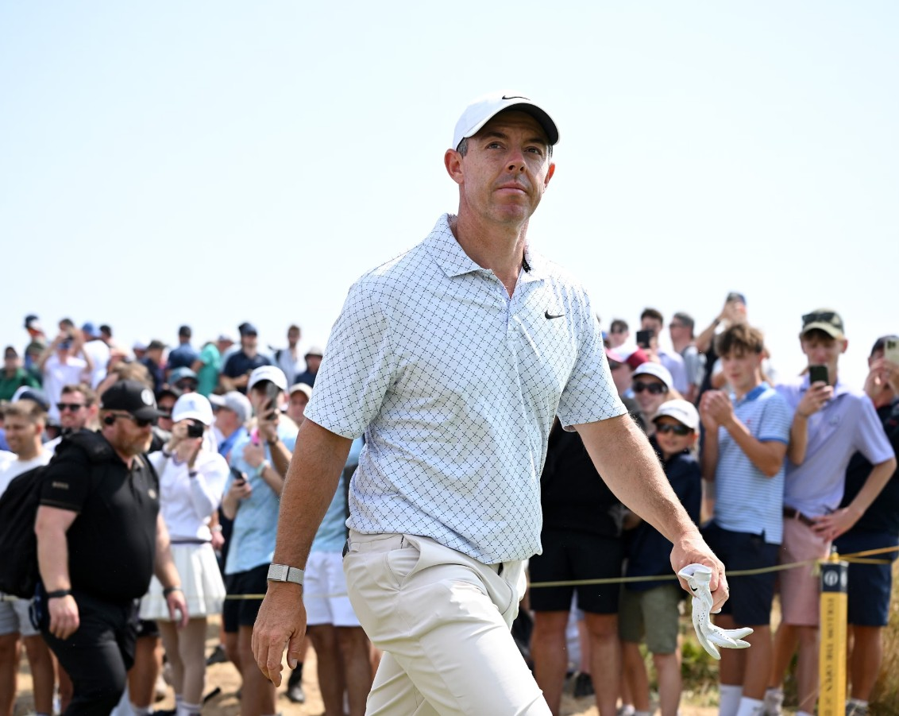
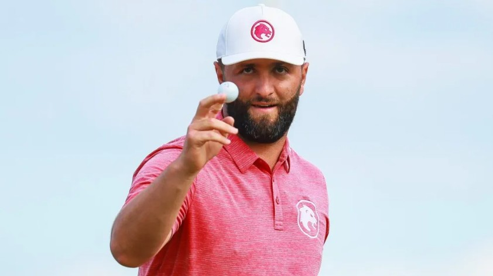
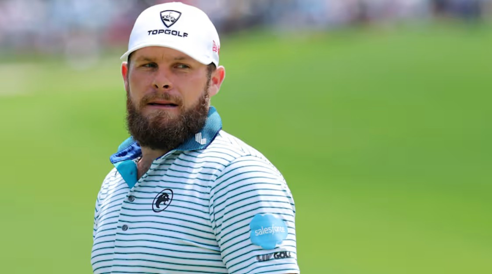

Royal Birkdale Golf Club · The Open Championship · July 16–19, 2026
2026 Open Championship: Statistical Favorites
Download PDF, Memo & SQLI. Executive Summary
The Open Championship returns to Royal Birkdale Golf Club July 16–19, 2026, for the first time since 2017. This analysis uses a custom-built SQLite relational database — populated with DataGolf skill rankings, 2026 season Strokes Gained data across the PGA Tour, DP World Tour, and LIV Golf, and actual Royal Birkdale results from the 2008 and 2017 Opens — to answer one question: who is statistically most likely to win?
The model combines three factors into a single composite score: a player's skill rank (DataGolf's own predictive rating), their current-season form (Strokes Gained: Total, Bayesian-shrunk to correct for small sample sizes), and a Royal Birkdale course-history bonus built from real finishing positions the last two times The Open visited this course.
The headline finding: only one player in the 156-man field checks all three boxes — elite skill rank, red-hot current form over a full season, and a proven result at Royal Birkdale. That player is Rory McIlroy. Behind him, Jon Rahm and Tyrrell Hatton round out the top three on current form alone, and one course-history specialist — Alex Noren — stands out as a longshot worth watching.
II. Royal Birkdale: What the Course Actually Rewards
Pulled from DataGolf's Course Insights for the two most recent Opens held at Royal Birkdale — nine seasons apart, but telling a consistent story.
| Metric | 2008 | 2017 |
|---|---|---|
| Scoring average | 74.89 (+4.89) | 71.28 (+1.28) |
| Score std. deviation | 3.18 (high variance) | 2.90 (typical PGA Tour variance) |
| Skill separation (slope vs. 1.0 = normal tour) | 0.60 | 0.72 |
| Player type favoured | Strongly favoured accurate drivers | Favoured accurate drivers |
III. Adding Course History to the Model
Cross-referencing the 2008 and 2017 Open leaderboards against the current 156-player field turned up 10 players still competing who have real Royal Birkdale results on record.
| Player | Best Birkdale Finish | Years |
|---|---|---|
| Padraig Harrington | Winner, 2008 | 2008 |
| Henrik Stenson | T3 (2008), T11 (2017) | 2008, 2017 |
| Alex Noren | T6 (2017), T19 (2008) | 2008, 2017 |
| Rory McIlroy | T4 (2017) | 2017 |
| Brooks Koepka | T6 (2017) | 2017 |
| Matthew Southgate | T6 (2017) | 2017 |
| Hideki Matsuyama | T14 (2017) | 2017 |
| Xander Schauffele | T20 (2017) | 2017 |
| Adam Scott | T16 (2008), T22 (2017) | 2008, 2017 |
| Rickie Fowler | T22 (2017) | 2017 |
IV. The Model
Data was loaded into SQLite across five tables: the 156-player Open field (with each player's DataGolf rank, OWGR, and tour rank), three Strokes Gained leaderboards (PGA Tour, DP World Tour, LIV Golf), and the Royal Birkdale course-history table above. Players were matched across tables by surname, with first-initial disambiguation for common names (Fitzpatrick, Kim, Hojgaard, Smith, Scott, Noren).
For each player, three factors were computed: a skill score derived from dg_rank (DataGolf's own predictive rank, which already blends long-term skill with recent form), a form score — current-season Strokes Gained: Total, normalized per round — and a course-history score, points awarded for Royal Birkdale finish (Win = 10, top-3 = 8, top-6 = 6, top-15 = 2–4, top-25 = 1) summed across 2008 and 2017. Because a hot stretch over just 18 rounds is far noisier than one over 60+, Bayesian shrinkage was applied to the Strokes Gained figures so a short hot streak can't outrank a full season of proven form.
| Simplified core of the ranking query | |
|---|---|
| SELECT f.player_name, f.dg_rank, f.owgr_rank, COALESCE(p.total/p.rnds, d.total/d.rnds, l.total/l.rnds) AS sg_per_round FROM field f LEFT JOIN pga_stats p ON f.last_name = p.surname LEFT JOIN dpwt_stats d ON f.last_name = d.surname LEFT JOIN liv_stats l ON f.last_name = l.surname ORDER BY composite_score DESC; |
V. Top 15 Contenders (Course-History Adjusted)
The direct output of the composite-score ranking query, expanded with additional PGA Tour and DP World Tour stat coverage.
| Rank | Player | DG Rank | Tour (SG/rd) | Birkdale History | Note |
|---|---|---|---|---|---|
| 1 | Rory McIlroy | 2 | PGA (+0.067) | T4, 2017 | Elite skill + hottest full-season form + real Birkdale pedigree |
| 2 | Jon Rahm | 5 | LIV (+0.067) | none | Matches McIlroy's per-round form over a full 36-round season |
| 3 | Tyrrell Hatton | 23 | DPWT (+0.104) | none | ⚠️ Only 18 rounds of data — highest raw SG/round, but small sample |
| 4 | Scottie Scheffler | 1 | PGA (+0.049) | none | #1 skill rank, but no Birkdale history and SG pace trails McIlroy/Rahm |
| 5 | Collin Morikawa | 8 | PGA (+0.043) | none | |
| 6 | Alex Fitzpatrick | 28 | PGA (+0.060) | none | Elite current form |
| 7 | Matt Fitzpatrick | 3 | PGA (+0.033) | none | |
| 8 | Tommy Fleetwood | 4 | PGA (+0.033) | none | Home-soil sentimental pick, no Birkdale Open history on record though |
| 9 | Cameron Young | 9 | PGA (+0.035) | none | |
| 10 | Xander Schauffele | 15 | PGA (+0.029) | T20, 2017 | Moves up on Birkdale pedigree |
| 11 | Sam Burns | 6 | PGA (+0.030) | none | |
| 12 | Russell Henley | 11 | PGA (+0.030) | none | |
| 13 | Ludvig Åberg | 13 | PGA (+0.029) | none | |
| 14 | Wyndham Clark | 7 | PGA (+0.026) | none | |
| 15 | Bryson DeChambeau | 24 | LIV (+0.039) | none |
Full ranking (all 156 players) and raw SQL tables are available in the download above.
VI. Three Most Likely Winners
1. Rory McIlroy

Tops every layer of the model: elite skill rank (#2), the hottest full-season Strokes Gained pace in the field (38 rounds, not a hot streak), and real Royal Birkdale pedigree (T4 in 2017). No one else in the 156-player field checks all three boxes.
2. Jon Rahm

Statistically even with McIlroy on SG/round, sustained across a full 36-round LIV season — this isn't a short-sample fluke. No recorded Birkdale history, so he's leaning entirely on current form and skill rank (#5), and it's enough to hold the #2 spot on its own.
3. Tyrrell Hatton

The highest raw SG/round figure in the entire field. The honest caveat stands — it's built on only 18 DP World Tour rounds, and Bayesian shrinkage pulled his score down accordingly — but even after that correction he's still #3. Worth taking seriously, not just as a value bet.
VII. Surprise Pick
Alex Noren — The Course-History Longshot
Ranked 21st overall — well outside the "favorite" tier — but he's the strongest Royal Birkdale course-history match of anyone in the field who isn't already a top-3 pick: T6 in 2017 and T19 in 2008, the only player besides Stenson and Scott with a real result in both editions. His current DataGolf rank (45th) and season form are solid-but-unspectacular, which is exactly why the model buries him — but "accurate, experienced ball-striker with two good finishes at a course that specifically rewards accuracy" is precisely the profile Royal Birkdale has rewarded twice now.
Note on Scheffler: The world's #1-ranked player sits 4th because he has no Royal Birkdale Open history in the data, and his 2026 SG pace — while strong across 58 rounds — hasn't spiked the way McIlroy's or Rahm's has. Given the course's history of favouring accurate drivers and compressing skill separation, this is a course where even an all-time great gets less of an automatic edge than usual.
VIII. Conclusion & Predicted Finish Order
Royal Birkdale's history says this is not a course where the favorite dominates — it's a course where accuracy, experience, and hot current form matter more than star power alone. Four names to watch:
| 1 | Rory McIlroy — Favorite | Only player combining elite skill rank, full-season hot form, and real Birkdale pedigree. |
| 2 | Jon Rahm — Co-Favorite | Matches McIlroy's SG/round pace over a full season, no course history needed. |
| 3 | Tyrrell Hatton — Form Play | Highest raw SG/round in the field, even after correcting for small sample size. |
| 4 | Alex Noren — Longshot | Best course-history profile outside the top 3; accuracy-first game fits Birkdale's tendencies. |
Methodology: All rankings were produced by SQL queries joining the field, pga_stats, dpwt_stats, liv_stats, and birkdale_history tables in a custom-built SQLite database (open2026.db). Data sourced from DataGolf's field rankings, season Strokes Gained tables, and Course Insights pages. Analysis conducted as part of a portfolio project at the University of Southern California Marshall School of Business.
2026 Open Championship Statistical Favorites Memo · Data: DataGolf